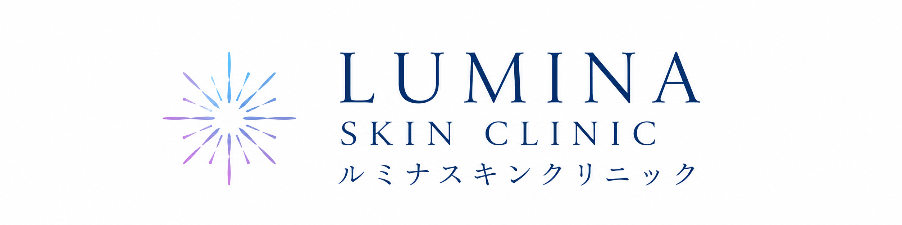
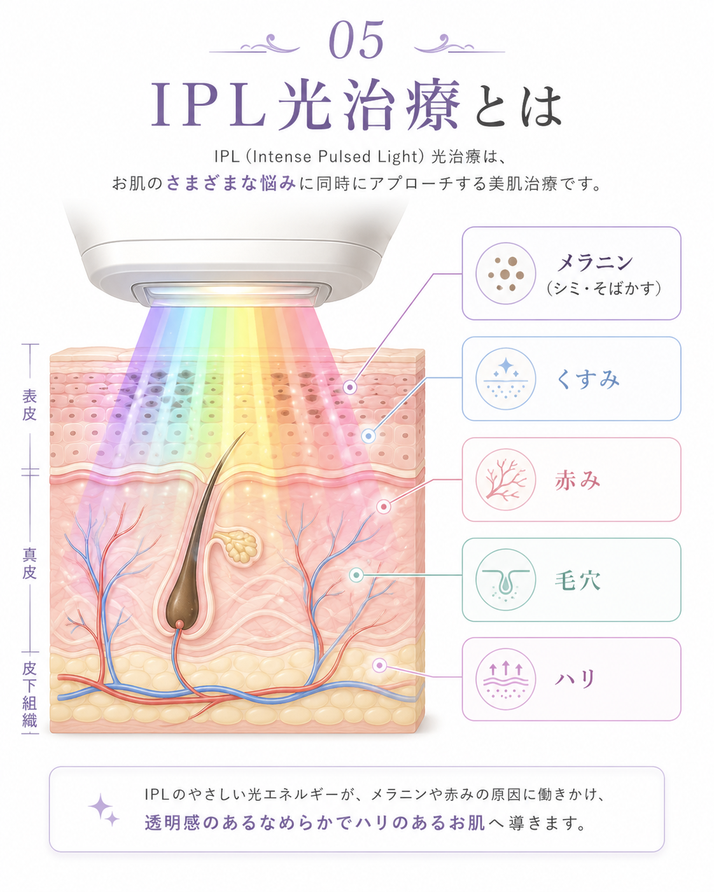
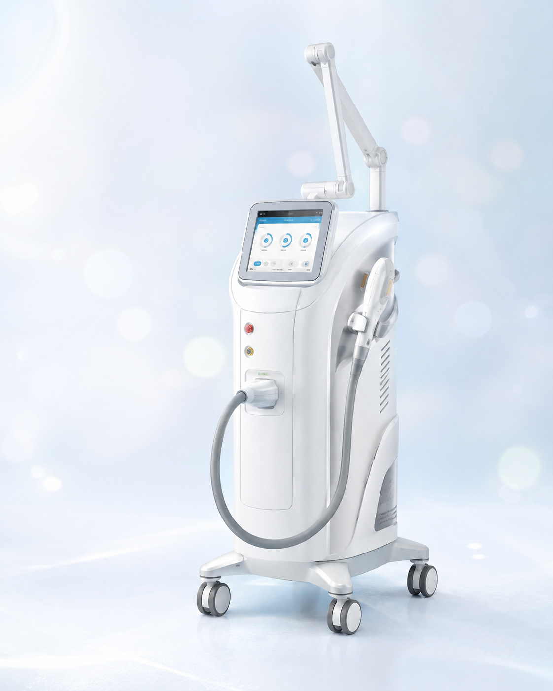
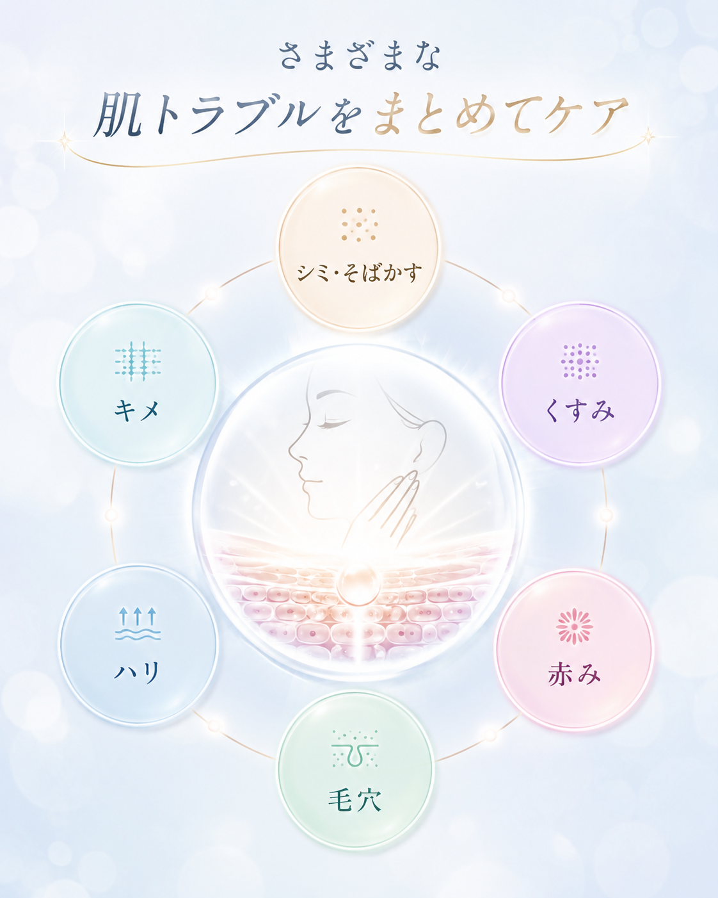
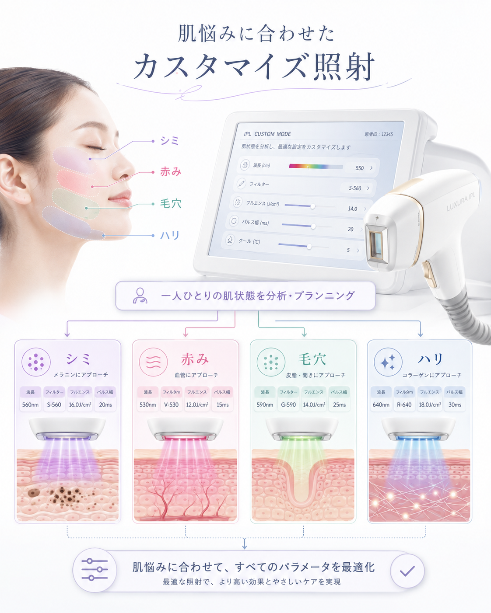
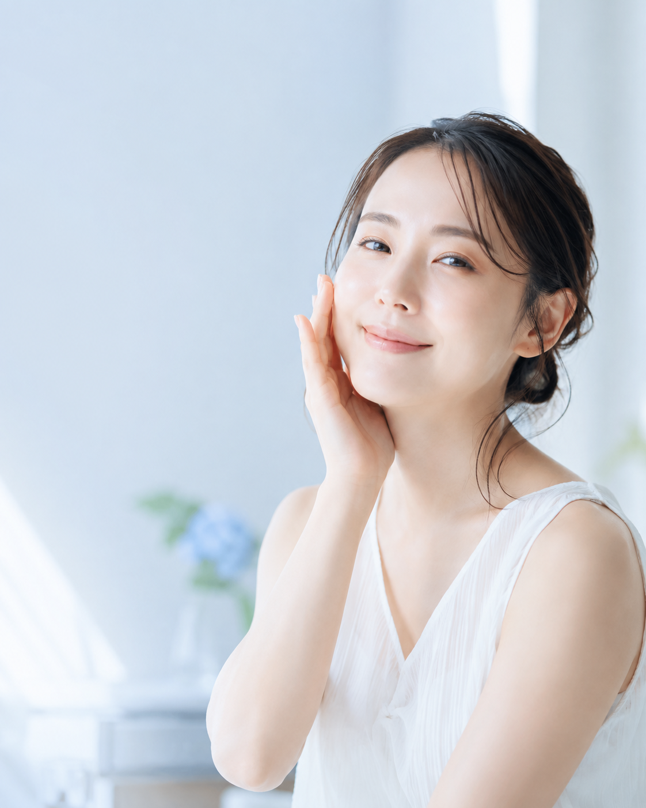
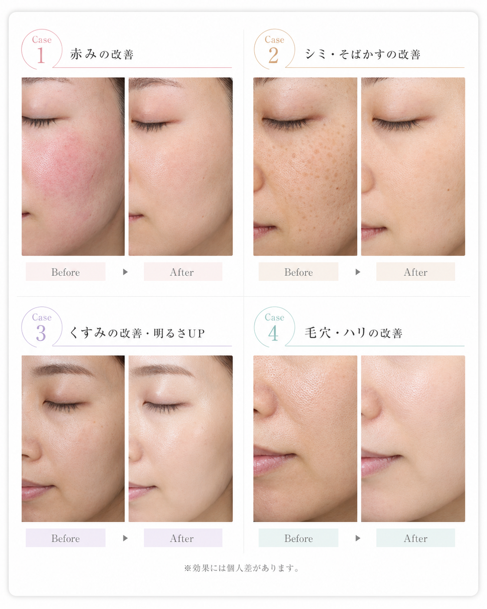

赤み
赤みの目立ちが気になる方のイメージ

24時間受付・簡単予約無料カウンセリングを予約するシミ・そばかす・くすみ・赤み・毛穴・ハリ不足に。
美容皮膚科のIPL光治療
フォトフェイシャルM22
8,900円（税込）
医師の診察のもと、
肌状態を確認してから施術をご案内します。
はじめての美容医療でも
安心してご相談ください。
初回限定
8,900円（税込）
医師の診察のもと、肌状態を確認してから施術をご案内します。
はじめての美容医療でも相談しやすいよう、初回価格をご用意しました。
シミを薄くしたい。
でも、くすみも気になる。
毛穴も、赤みも、ハリ不足も気になる。
年齢や紫外線、生活習慣によって、肌悩みは複数重なって現れます。
だからこそ、顔全体の印象にアプローチできる治療選びが大切です。
そこで選ばれているのが、IPL光治療です。
肌に眠る色素や赤みに光でアプローチする美肌治療

IPLは、幅広い波長の光を肌に照射する治療です。
シミ・そばかすの原因となるメラニン、赤みの原因となる血管、肌全体のくすみやハリ不足など、複数の肌悩みにアプローチします。
レーザーのように一点に強く作用する治療とは異なり、顔全体の肌質改善を目指しやすいことが特徴です。
※効果の感じ方や必要回数には個人差があります。
肌悩みに合わせて照射設定を調整できるIPL光治療機器

※画像は施術機器のイメージです。
フォトフェイシャルM22は、IPL（光エネルギー）を肌に照射し、シミ・そばかす・くすみ・赤み・毛穴・ハリ不足など、さまざまな肌悩みにアプローチする光治療機器です。
波長や出力などを細かく調整できるため、一人ひとりの肌状態や目的に合わせた治療プランをご提案することが可能です。
医師の診察のもと、肌状態に合わせて施術
当院では、施術前に医師が肌状態を確認します。
シミの種類や赤み、肌質によって適した治療は異なるため、カウンセリングと診察を行ったうえで施術をご案内します。
美容医療が初めての方でも安心してご相談いただけるよう、わかりやすく丁寧にご説明いたします。
さまざまな肌トラブルをまとめてケア

肌悩みは、ひとつだけではありません。
フォトフェイシャルM22は、顔全体に光を照射することで、シミ・そばかす・くすみ・赤み・毛穴・ハリ・キメなど、複数の肌悩みにまとめてアプローチします。
一部分だけではなく、肌全体の印象を整えながら、明るく透明感のある素肌を目指します。
肌悩みに合わせたカスタマイズ照射

シミ・赤み・毛穴・ハリなどのお悩みを確認
肌状態や目的に合わせて出力や設定を調整
肌状態に応じた治療プランをご提案
シミが気になる方、赤みが気になる方、毛穴やハリ不足が気になる方では、適した照射設定が異なります。
当院では肌状態を確認し、一人ひとりに合わせて照射設定を調整します。
全員に同じ施術を行うのではなく、肌状態や目的に合わせた治療プランをご提案します。
ダウンタイムが少なく、
日常生活に取り入れやすい

施術後に赤みやほてりが出る場合がありますが、多くの場合は時間の経過とともに落ち着きます。
ダウンタイムが比較的少ないため、日常生活に取り入れやすい治療です。
施術後は紫外線対策と保湿ケアを行ってください。
※痛みやダウンタイムの感じ方には個人差があります。

赤みの目立ちが気になる方のイメージ
シミ・そばかすが気になる方のイメージ
肌全体のくすみが気になる方のイメージ
毛穴やハリ不足が気になる方のイメージ
はじめての方も安心してご来院
いただけるよう、
丁寧にサポートいたします。
予約フォームからご希望日時をお選びください。空き状況を確認後、当院よりご連絡いたします。
肌悩みやご希望、過去の施術歴などを丁寧に確認します。
医師が肌状態を確認し、施術可否や適した治療方法をご案内します。
肌状態に合わせて設定を調整し、IPLを照射します。
施術後の注意事項、保湿、紫外線対策についてご案内します。
気になる点を事前に解消してから
ご相談いただけます。
A輪ゴムではじかれるような刺激を感じる場合があります。痛みの感じ方には個人差があります。
A肌状態やお悩みによって異なります。診察時に目安をご案内します。
A赤みやほてりが出る場合がありますが、多くの場合は時間の経過とともに落ち着きます。
A肌状態によって異なります。施術後の状態を確認し、スタッフよりご案内します。
A効果には個人差があります。シミの種類によっては別の治療が適している場合もあります。
Aはい。肌状態の確認や治療内容のご相談だけでも可能です。無理な契約はありません。
安心してご相談いただくために、
事前にご確認ください。
保険適用外の施術です。
赤み、ほてり、ひりつき、乾燥、かさぶた、色素沈着、炎症などが生じる場合があります。
妊娠中の方、強い日焼けがある方、光過敏症の方などは施術を受けられない場合があります。
効果の感じ方や必要回数には個人差があります。詳しくは医師の診察時にご説明します。
初回限定顔全体1回8,900円（税込）
※フォトフェイシャルM22は自由診療です。
※記載内容は一例です。詳しくは医師の診察時にご確認ください。
肌悩みを、
ひとりで抱え込まないでください
シミ、そばかす、くすみ、赤み、毛穴、ハリ不足など、気になることをまずはお気軽にご相談ください。
あなたの肌状態に合わせて、適した治療方法をご案内します。
初回限定 顔全体1回 8,900円（税込）
24時間WEB予約受付中